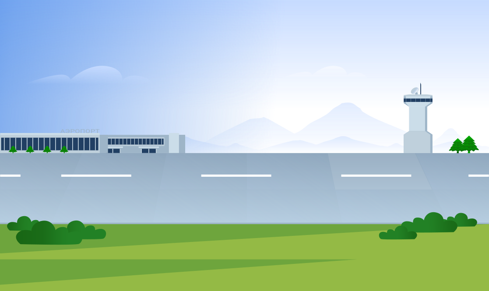
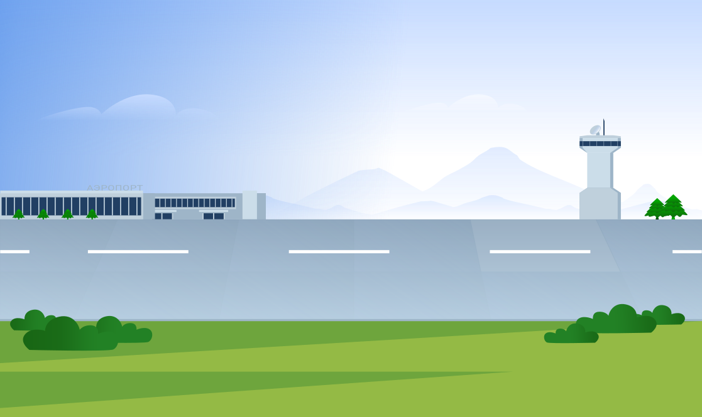

Когда мы слышим об электромобилях, на ум сразу приходят
современные городские авто, которые уже успели ласково прозвать
«электричками». Но что происходит за пределами знакомых проспектов
и улиц? Куда еще успели добраться экологичные технологии?
Оказывается, они ждут нас даже в аэропортах. «Озеленение»
аэропортовой техники — общемировая тенденция, и те же электробусы
уже не новость. Но в 2024 году в аэропорту Шереметьево появился
первый в России электрический аэродромный топливозаправщик. Готовы
вместе с нами заглянуть «под капот»?